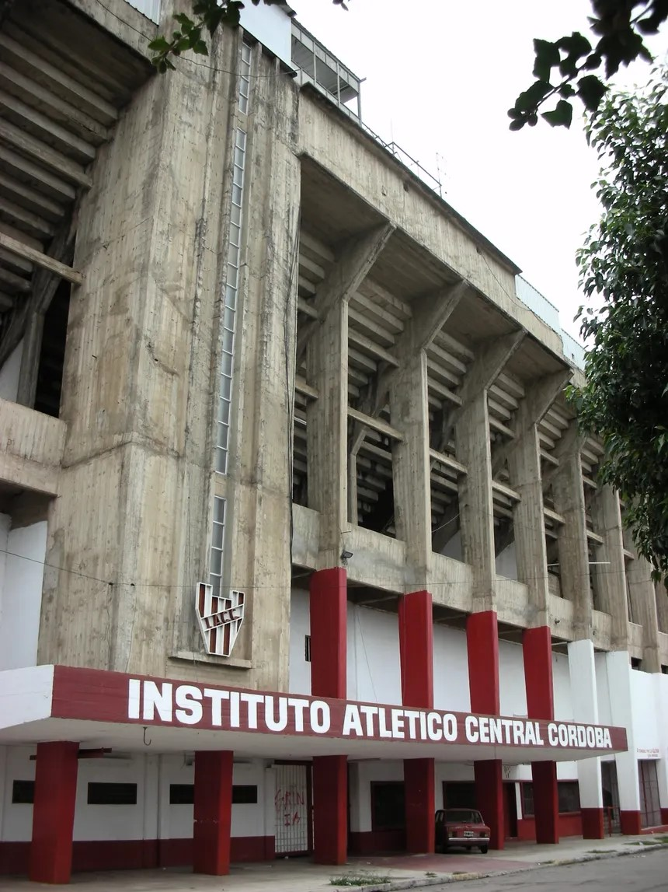

Por aquel entonces Guillermo Dundas, quien tuvo gran influencia en la creación del de la nueva entidad, era simpatizante del club Alumni de Buenos Aires. De allí que sugirió en Asamblea que la camiseta que vistieran los jugadores fueran a rayas verticales rojas y blancas y pantalón blanco.
En 1919 Instituto se declara campeón invito en Segunda División del torneo de la Ex Liga Cordobesa lo que le da derecho a militar en Primera División. En 1925-26-27 y 28 Instituto se queda con el primer lugar consagrándose Campeón durante cuatro años consecutivos. Así, los aficionados pasan a denominar a Instituto como el glorioso y con los años se fueron adaptando a La Gloria.
La construcción del Monumental Para su construcción, Instituto había solicitado un préstamo de $1.500.000 avalado por la Ley Nº 12.931, decretada durante la Presidencia de Juan Domingo Perón, en cuyo artículo 23 facultaba al poder Ejecutivo Nacional a disponer de la suma de $ 20.000.000 para otorgar subsidios para la construcción de estadios a Entidades Sociales y Deportivas de todo el país. Así La Gloria comenzaba a hacer realidad su sueño de tener un estadio propio. El 15 de agosto de 1951, como parte de los festejos de los 33 años de vida del club, se inauguró el Estadio Monumental, con un partido amistoso ante Racing Club de Avellaneda. El 27 de diciembre de 1957 en amistoso con Vélez, se inauguraron las torres de iluminación. En esta época se decide también la construcción de una tribuna en el Sector Oeste, sobre la Calle Sucre: hoy conocida como Preferencial. La misma se construyó de cemento en un largo de 73 metros y con 24 escalones. La obra se concluyó e inauguró en 1960.
